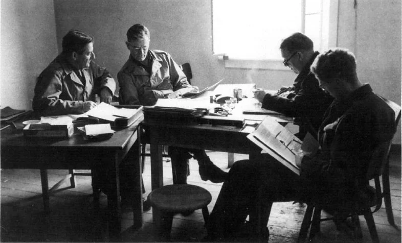
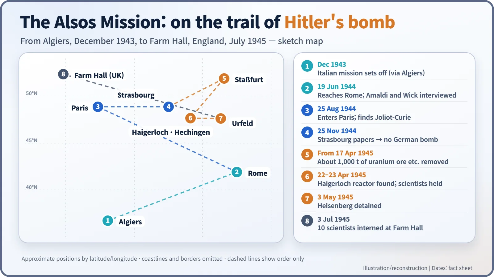
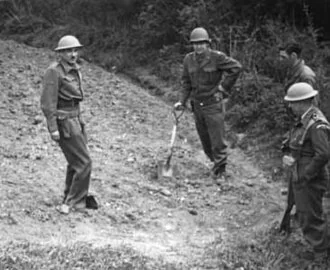
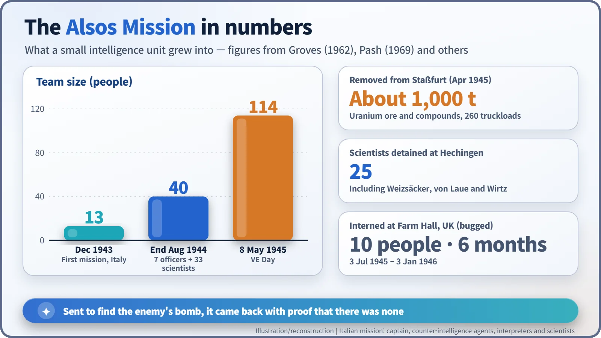

Nuclear History · 110
A Codename That Teased the General — The Alsos Mission and the Hunt for Hitler's Bomb (1943–1945)
Sent to measure the fear that drove the Manhattan Project, a small unit came back with proof that Germany's bomb did not exist.
In 1943 the Manhattan Project set up a small unit of soldiers and scientists, codenamed Alsos, to find out how close Nazi Germany was to an atomic bomb. Papers seized in Strasbourg in November 1944 showed that Germany had no bomb and was not near one. In the spring of 1945 the team gathered up German uranium and scientists, whose secretly recorded reactions to Hiroshima are still debated today.
A codename that teased the general
Late in 1943, a codename for a new unit landed on the desk of General Leslie Groves, head of the Manhattan Project. It was "Alsos", the Greek word for a small wood, or in English, a grove. The pun on the general's own name was hard to miss. Groves disliked it, but he left it alone: changing it, he reasoned, would only draw unwanted attention. So, carrying a private joke in its name, a unit set off to find the enemy's atomic bomb. [7]
Built on fear, sent to measure it
From the start, the Manhattan Project rested on one fear: what if Germany got there first? Fission had been discovered in Germany, and Werner Heisenberg, one of the world's leading physicists, was working there. Yet nobody in Washington knew how far the German programme had actually come.
The Army's answer was to put scientists and intelligence officers in the same team. The commander was an Army intelligence officer, Lieutenant Colonel Boris Pash (1900–1995). One rule stood out: team members were not told the details of the Manhattan Project, so that if they were captured they would have nothing useful to reveal. [1]
The first mission went to Italy by way of Algiers in December 1943. It was just 13 people (a captain, four counter-intelligence agents, four interpreters and four scientists), and it turned up little about nuclear research. [7]
The physicist who co-discovered spin
The real work lay in western Europe. On 4 April 1944, Secretary of War Henry Stimson formally created the western European mission, and its scientific chief was Samuel Goudsmit (1902–1978), a Dutch-born physicist who in 1925 had proposed the idea of electron spin together with George Uhlenbeck. He was chosen largely because he spoke several western European languages. [7]

For Goudsmit the mission was also personal. In 1943 the German occupiers had deported his parents from The Hague to a concentration camp, where they were murdered. According to his biographer, during the mission he went back to the ruins of their house, and the guilt of not having saved them stayed with him for the rest of his life. [6]
Alsos followed close behind the advancing Allied armies. On 25 August 1944, in Paris, the team tracked down the French physicist Frédéric Joliot-Curie.
Strasbourg: "Germany had no atom bomb"
The decisive moment came on 25 November 1944 in Strasbourg. The German physicist Carl Friedrich von Weizsäcker had already fled, but the papers in his office had not. Going through them, the team learned where the German research groups were and how far they had got. [1]
Goudsmit later wrote in his memoir Alsos (1947): "The conclusions were unmistakable. The evidence at hand proved definitely that Germany had no atom bomb and was not likely to have one in any reasonable time." The German programme had never moved beyond research. [2]

Spring 1945: collecting people and uranium
Now the aim shifted from finding out to taking in: securing German scientists and materials before the Soviet Union or France could. From 17 April 1945, at Staßfurt, in what was to become the Soviet zone, the team hauled away about 1,000 tonnes of uranium ore and uranium compounds, some 260 truckloads. [7]
On 22–23 April they reached Haigerloch in south-west Germany. In a rock cellar they found an experimental reactor that had never reached criticality, and in a nearby field they dug up about 1.5 tonnes of buried uranium and drums of heavy water. In nearby Hechingen they detained 25 scientists, including Weizsäcker and the Nobel laureate Max von Laue; at Tailfingen they took Otto Hahn, the chemist who had discovered fission. Heisenberg was picked up at his home in Urfeld, Bavaria, on 3 May.

The unit that had started with 13 people numbered 114 by VE Day, 8 May 1945.

Dinner, with microphones
Ten German scientists, among them Hahn, Heisenberg and Weizsäcker, were then held for six months from 3 July 1945 at Farm Hall, a country house near Cambridge, England. The house was bugged. [1]
On the evening of 6 August, news of Hiroshima came over the radio. The transcripts (which survive only in English translation) record Hahn saying, "I am thankful that we were not the first to drop the uranium bomb." Weizsäcker said, "we must admit that we didn't want to succeed," and the next day he suggested that history would record that the Americans and the English made a bomb while the Germans, under the Hitler regime, produced a workable engine. [4]
The transcripts were released only in 1992. They broadly confirm that the German programme was far from a weapon, but historians still disagree about why. Goudsmit argued that science could not work properly under a totalitarian state. Some German scientists later said they had held back for reasons of conscience. Many historians put more weight on shortages of resources, technical limits and policy choices. Whether the Farm Hall remarks were sincere or a story crafted for posterity is also still debated.
After the rival vanished
The bomb the United States had feared did not exist. Yet even after that became clear in late 1944, the Manhattan Project did not stop. Around then, the physicist Joseph Rotblat left Los Alamos; he later said that the news that Germany was not close to a bomb was his reason. [5]
The rival had gone, but the project was now moving under its own momentum, and a new question was reaching the scientists: how should this weapon be used? In the end, the little "grove" named after the general found that the enemy was not in the woods at all.